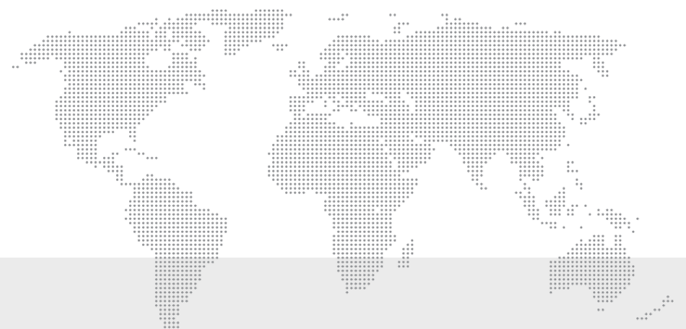

International Standards · ISPPPI
Edition 2018 · effective 1 June 2018 · superseded
Retrieved on 25 November 2026 from https://www.wada-ama.org/sites/default/files/resources/files/ispppi-_final_-_en.pdf
Editions: 2027 (current) · 2021 (November 2021) · 2018 · 2015 · 2009 · 2009 (annex)
p. 1
International Standard for the Protection of Privacy and Personal Information
WORLD ANTI-DOPING CODE INTERNATIONAL STANDARD

PROTECTION OF PRIVACY AND PERSONAL INFORMATION
JUNE 2018
p. 2
International Standard for the Protection of Privacy and Personal Information
The World Anti-Doping Code International Standard for the Protection of Privacy and Personal Information (ISPPPI) is a mandatory International Standard developed as part of the World Anti-Doping Program.
The International Standard for Protection of Privacy and Personal Information was first adopted 9 May 2009 and came into effect 1 June 2009. The enclosed ISPPPI incorporates revisions to the ISPPPI and was approved by the WADA Executive Committee on 16 May 2018. It will come into effect on 1 June 2018.
The official text of the International Standard for the Protection of Privacy and Personal Information shall be maintained by WADA and shall be published in English and French. In the event of any conflict between the English and French versions, the English version shall prevail.
Published by:
World Anti-Doping Agency Stock Exchange Tower 800 Place Victoria (Suite 1700) PO Box 120 Montreal, Quebec Canada H4Z 1B7
URL: www.wada-ama.org
Tel:
+1 514 904 9232
Fax: +1 514 904 8650
E-mail: code@wada-ama.org
p. 3
PREAMBLE
The World Anti-Doping International Standard for the Protection of Privacy and Personal Information is a mandatory International Standard developed as part of the World Anti-Doping Program.
WADA and Anti-Doping Organizations share responsibility for ensuring that Personal Information Processed in connection with Anti-Doping Activities is protected as required by data protection and privacy laws, principles and standards. The main purpose of this International Standard is to ensure that organizations and Persons involved in anti-doping in sport apply appropriate, sufficient and effective privacy protections to Personal Information that they Process, regardless of whether this is also required by applicable laws.
A WADA expert reference group reviewed, discussed and prepared this document, and specifically took into account the Organization for Economic Cooperation and Development's (OECD) 1980 Guidelines on the Protection of Privacy and Transborder Flows of Personal Data; the Council of Europe Convention for the Protection of Individuals with regard to Automatic Processing of Personal Data (ETS. No. 108); the APEC Privacy Framework; the Charter of Fundamental Rights of the European Union, EU Regulation 2016/679 on the protection of natural persons with regard to the processing of personal data, and other international and regional data privacy rules, standards and case law, such as the judgement of the European Court of Human Rights of 18 January 2018 (FNASS and others vs. France).
The official text of the International Standard for the Protection of Privacy and Personal Information shall be maintained by WADA and shall be published in English and French. In the event of any conflict between the English and French versions, the English version shall prevail.
p. 4
p. 5
PART ONE: INTRODUCTION, CODE PROVISIONS AND DEFINITIONS
1.0 Introduction and Scope
The purpose of the International Standard for the Protection of Privacy and Personal Information is to ensure that Anti-Doping Organizations apply appropriate, sufficient and effective privacy protections to the Personal Information they Process when conducting anti-doping programs, in recognition of the fact that Personal Information gathered in the anti-doping context can impinge upon and implicate the privacy rights of Persons involved in and associated with organized sport.
The Code, in particular, requires Athletes and Athlete Support Personnel to furnish a significant amount of Personal Information to Anti-Doping Organizations. As a result, it is essential that Anti-Doping Organizations appropriately protect the Personal Information that they Process both to meet legal standards and to ensure the continued confidence and trust of those involved in organized sport.
The Code recognizes and affirms the importance of ensuring that the privacy rights of Persons subject to anti-doping programs based on the Code are fully respected. In support of this commitment, this International Standard provides mandatory rules and standards relating to the protection of Personal Information by Anti-Doping Organizations.
Consistent with other International Standards that have been developed and implemented to date, this International Standard sets forth a minimum, common set of rules to which Anti-Doping Organizations must conform when collecting and handling Personal Information pursuant to the Code. In some cases, Anti-Doping Organizations may be required by applicable laws to apply rules or standards that exceed those set forth in this Standard. For purposes of this International Standard, definitions appearing in the Code shall be italicized, and additional definitions created for purposes of this International Standard shall be underlined.
2.0 Code Provisions
The following articles of the Code are directly relevant to this International Standard for the Protection of Privacy and Personal Information:
- Code Article 14 Confidentiality and Reporting
The principles of coordination of anti-doping results, public transparency and accountability and respect for the privacy of all Athletes or other Persons are as follows:
14.1 Information Concerning Adverse Analytical Findings, Atypical Findings, and other Asserted Anti-Doping Rule Violations.
p. 6
14.1.1 Notice of Anti-Doping Rule Violations to Athletes and other Persons.
The form and manner of notice of an asserted anti-doping rule violation shall be as provided in the rules of the Anti-Doping Organization with results management responsibility.
14.1.2 Notice of Anti-Doping Rule Violations to National Anti-Doping Organizations, International Federations and WADA.
The Anti-Doping Organization with results management responsibility shall also notify the Athlete's National Anti-Doping Organization, International Federation and WADA of the assertion of an anti-doping rule violation simultaneously with the notice to the Athlete or other Person.
14.1.3 Content of an Anti-Doping Rule Violation Notice.
Notification shall include: the Athlete's name, country, sport and discipline within the sport, the Athlete's competitive level, whether the test was In-Competition or Out-of-Competition, the date of Sample collection, the analytical result reported by the laboratory and other information as required by the International Standard for Testing and Investigations, or for anti-doping rule violations other than Article 2.1, the rule violated and the basis of the asserted violation.
14.1.4 Status Reports.
Except with respect to investigations which have not resulted in notice of an anti-doping rule violation pursuant to Article 14.1.1, the Anti-Doping Organizations referenced in Article 14.1.2 shall be regularly updated on the status and findings of any review or proceedings conducted pursuant to Article 7, 8 or 13 and shall be provided with a prompt written reasoned explanation or decision explaining the resolution of the matter.
14.1.5 Confidentiality.
The recipient organizations shall not disclose this information beyond those Persons with a need to know (which would include the appropriate personnel at the applicable National Olympic Committee, National Federation, and team in a Team Sport) until the Anti-Doping Organization with results management responsibility has made Public Disclosure or has failed to make Public Disclosure as required in Article 14.3.
[Comment to Article 14.1.5: Each Anti-Doping Organization shall provide, in its own anti-doping rules, procedures for the protection of confidential information and for investigating and disciplining improper disclosure of confidential information by any employee or agent of the Anti-Doping Organization.]
14.2 Notice of Anti-Doping Rule Violation Decisions and Request for Files.
]
p. 7
14.2.1 Anti-doping rule violation decisions rendered pursuant to Article 7.10, 8.4, 10.4, 10.5, 10.6, 10.12.3 or 13.5 shall include the full reasons for the decision, including, if applicable, a justification for why the maximum potential sanction was not imposed. Where the decision is not in English or French, the Anti-Doping Organization shall provide a short English or French summary of the decision and the supporting reasons.
14.2.2 An Anti-Doping Organization having a right to appeal a decision received pursuant to Article 14.2.1 may, within 15 days of receipt, request a copy of the full case file pertaining to the decision.
14.3 Public Disclosure.
14.3.1 The identity of any Athlete or other Person who is asserted by an Anti-Doping Organization to have committed an anti-doping rule violation, may be Publicly Disclosed by the Anti- Doping Organization with results management responsibility only after notice has been provided to the Athlete or other Person in accordance with Article 7.3, 7.4, 7.5, 7.6 or 7.7, and to the applicable Anti-Doping Organizations in accordance with Article 14.1.2.
14.3.2 No later than twenty days after it has been determined in a final appellate decision under Article 13.2.1 or 13.2.2, or such appeal has been waived, or a hearing in accordance with Article 8 has been waived, or the assertion of an anti-doping rule violation has not otherwise been timely challenged, the Anti-Doping Organization responsible for results management must Publicly Report the disposition of the anti-doping matter including the sport, the anti-doping rule violated, the name of the Athlete or other Person committing the violation, the Prohibited Substance or Prohibited Method involved and the Consequences imposed. The same Anti-Doping Organization must also Publicly Report within twenty days the results of final appeal decisions concerning anti-doping rule violations, including the information described above.
14.3.3 In any case where it is determined, after a hearing or appeal, that the Athlete or other Person did not commit an anti-doping rule violation, the decision may be Publicly Disclosed only with the consent of the Athlete or other Person who is the subject of the decision. The Anti-Doping Organization with results management responsibility shall use reasonable efforts to obtain such consent, and if consent is obtained, shall Publicly Disclose the decision in its entirety or in such redacted form as the Athlete or other Person may approve.
14.3.4 Publication shall be accomplished at a minimum by placing the required information on the Anti-Doping Organization's website and leaving the information up for the longer of one month or the duration of any period of Ineligibility.
]
p. 8
14.3.5 No Anti-Doping Organization or *WADA-*accredited laboratory, or official of either, shall publicly comment on the specific facts of any pending case (as opposed to general description of process and science) except in response to public comments attributed to the Athlete, other Person or their representatives.
14.3.6 The mandatory Public Reporting required in 14.3.2 shall not be required where the Athlete or other Person who has been found to have committed an anti-doping rule violation is a Minor. Any optional Public Reporting in a case involving a Minor shall be proportionate to the facts and circumstances of the case.
14.4 Statistical Reporting.
Anti-Doping Organizations shall, at least annually, publish publicly a general statistical report of their Doping Control activities, with a copy provided to WADA. Anti-Doping Organizations may also publish reports showing the name of each Athlete tested and the date of each Testing. WADA shall, at least annually, publish statistical reports summarizing the information that it receives from Anti-Doping Organizations and laboratories.
14.5 Doping Control Information Clearinghouse.
WADA shall act as a central clearinghouse for Doping Control Testing data and results, including, in particular, Athlete Biological Passport data for International-Level Athletes and National-Level Athletes and whereabouts information for Athletes including those in Registered Testing Pools. To facilitate coordinated test distribution planning and to avoid unnecessary duplication in Testing by various Anti-Doping Organizations, each Anti-Doping Organization shall report all In-Competition and Out-ofCompetition tests on such Athletes to the WADA clearinghouse, using ADAMS or another system approved by WADA, as soon as possible after such tests have been conducted. This information will be made accessible, where appropriate and in accordance with the applicable rules, to the Athlete, the Athlete's National Anti-Doping Organization and International Federation, and any other Anti-Doping Organizations with Testing authority over the Athlete.
To enable it to serve as a clearinghouse for Doping Control Testing data and results management decisions, WADA has developed a database management tool, ADAMS, that reflects data privacy principles. In particular, WADA has developed ADAMS to be consistent with data privacy statutes and norms applicable to WADA and other organizations using ADAMS. Private information regarding an Athlete, Athlete Support Personnel, or others involved in anti-doping activities shall be maintained by WADA, which is supervised by Canadian privacy authorities, in strict confidence and in accordance with the International Standard for the Protection of Privacy and Personal Information.
14.6 Data Privacy.
]
p. 9
Anti-Doping Organizations may collect, store, process or disclose personal information relating to Athletes and other Persons where necessary and appropriate to conduct their anti-doping activities under the Code and International Standards (including specifically the International Standard for the Protection of Privacy and Personal Information), and in compliance with applicable law.
[Comment to Article 14.6: Note that Article 22.2 provides that "Each government will put in place legislation, regulation, policies or administrative practices for cooperation and sharing of information with Anti-Doping Organizations and sharing of data among Anti-Doping Organizations as provided in the Code."]
3.0 Terms and Definitions
3.1 Selected Defined Terms from the Code
Anti-Doping Organization: A Signatory that is responsible for adopting rules for initiating, implementing or enforcing any part of the Doping Control process. This includes, for example, the International Olympic Committee, the International Paralympic Committee, other Major Event Organizations that conduct Testing at their Events, WADA, International Federations, and National Anti-Doping Organizations.
Athlete: Any Person who competes in sport at the international level (as defined by each International Federation) or the national level (as defined by each National Anti-Doping Organization). An Anti-Doping Organization has discretion to apply anti-doping rules to an Athlete who is neither an International-Level Athlete nor a National-Level Athlete, and thus to bring them within the definition of "Athlete." In relation to Athletes who are neither International-Level nor National-Level Athletes, an Anti-Doping Organization may elect to: conduct limited Testing or no Testing at all; analyze Samples for less than the full menu of Prohibited Substances; require limited or no whereabouts information; or not require advance TUEs. However, if an Article 2.1, 2.3 or 2.5 anti-doping rule violation is committed by any Athlete over whom an Anti-Doping Organization has authority who competes below the international or national level, then the Consequences set forth in the Code (except Article 14.3.2) must be applied. For purposes of Article 2.8 and Article 2.9 and for purposes of anti-doping information and education, any Person who participates in sport under the authority of any Signatory, government, or other sports organization accepting the Code is an Athlete.
[Comment: This definition makes it clear that all International- and National-Level Athletes are subject to the anti-doping rules of the Code, with the precise definitions of international- and national-level sport to be set forth in the anti-doping rules of the International Federations and National Anti-Doping Organizations, respectively. The definition also allows each National Anti-Doping Organization, if it chooses to do so, to expand its anti-doping program beyond International- or National-Level Athletes to competitors at lower levels of Competition or to individuals who engage in fitness activities but do not compete at all. Thus, a National Anti-Doping Organization could, for example, elect to test
]
p. 10
recreational-level competitors but not require advance TUEs. But an anti-doping rule violation involving an Adverse Analytical Finding or Tampering results in all of the Consequences provided for in the Code (with the exception of Article 14.3.2). The decision on whether Consequences apply to recreational-level Athletes who engage in fitness activities but never compete is left to the National Anti-Doping Organization. In the same manner, a Major Event Organization holding an Event only for masters-level competitors could elect to test the competitors but not analyze Samples for the full menu of Prohibited Substances. Competitors at all levels of Competition should receive the benefit of anti-doping information and education.]
Athlete Support Personnel: Any coach, trainer, manager, agent, team staff, official, medical, paramedical personnel, parent or any other Person working with, treating or assisting an Athlete participating in or preparing for sports Competition.
Participant: Any Athlete or Athlete Support Person.
3.2 Defined Terms from the International Standard on Privacy and Personal Information
Anti-Doping Activities: Activities specified by the Code and the International Standards to be carried out by Anti-Doping Organizations, and their Third-Party Agents, for the purpose of establishing whether anti-doping rule violations took place, including collecting whereabouts information; conducting Testing; performing results management; determining whether an Athlete's Use of a Prohibited Substance or Prohibited Method is strictly limited to legitimate and documented therapeutic purposes; educating Participants on their rights and responsibilities; conducting investigations into anti-doping rule violations; and initiating legal proceedings against those who are alleged to have committed such a violation.
Personal Information: Information, including without limitation Sensitive Personal Information, relating to an identified or identifiable Participant or relating to other Persons whose information is Processed solely in the context of an Anti-Doping Organization's Anti-Doping Activities.
[3.2 Comment: It is understood that Personal Information includes, but is not limited to, information relating to an Athlete's name, date of birth, contact details and sporting affiliations, whereabouts, designated therapeutic use exemptions (if any), anti-doping test results, and results management (including disciplinary hearings, appeals and sanctions). Personal Information also includes personal details and contact information relating to other Persons, such as medical professionals and other Persons working with, treating or assisting an Athlete in the context of Anti-Doping Activities. Such information remains Personal Information and is regulated by this Standard for the entire duration of its Processing, irrespective of whether the relevant individual remains involved in organized sport.]
]
p. 11
Processing (and its cognates, Process and Processed): Collecting, retaining, storing, disclosing, transferring, transmitting, amending, deleting or otherwise making use of Personal Information.
Security Breach: Any unauthorized and/or unlawful Processing of, including access to, Personal Information whether in electronic or hard-copy or other form, or interference with an information system, that compromises the privacy, security, confidentiality, availability or integrity of Personal Information.
Sensitive Personal Information: Personal Information relating to a Participant's racial or ethnic origin, commission of offences (criminal or otherwise), health (including information derived from analyzing an Athlete's Samples or Specimens) and biometric and genetic information.
Third Party: Any natural Person or legal entity other than the natural Person to whom the relevant Personal Information relates, Anti-Doping Organizations and Third-Party Agents.
Third-Party Agent: Any natural or legal Person, public authority, agency or body, including without limitation subcontractors and their subcontractors, that Processes Personal Information for or on behalf of an Anti-Doping Organization.
PART TWO: STANDARDS FOR HANDLING PERSONAL INFORMATION
4.0 Processing Personal Information in Accordance with International Standard and Applicable Law
4.1 This International Standard sets forth a minimum set of requirements applicable to the Processing of Personal Information by Anti-Doping Organizations and their Third-Party Agents in the context of their Anti-Doping Activities. All Anti-Doping Organizations must comply with this Standard, even when its requirements exceed those arising under the Anti-Doping Organization's applicable data protection and/or privacy laws, reflecting the vital need to protect the privacy of Participants and other Persons involved in and associated with anti-doping in sport.
[4.1 Comment: Anti-Doping Organizations, along with any Third-Party Agents that Process Personal Information for or on behalf of Anti-Doping Organizations, minimally must comply with the requirements set forth in this International Standard, provided that such compliance does not breach other applicable laws. In cases where compliance with the requirements of this International Standard may cause an Anti-Doping Organization to breach other applicable laws, those laws shall prevail. This result will not lead to a determination of non-compliance with the World Anti-Doping Code.]
4.2 Anti-Doping Organizations may be subject to data protection and privacy laws and regulations that impose requirements that exceed those arising under this International Standard. In such circumstances, Anti-Doping Organizations must ensure that their Processing of Personal Information complies with all such data protection and privacy laws and regulations.
Cited by 1
]
p. 12
[4.2 Comment: Anti-Doping Organizations in certain countries may be subject to laws and regulations that govern their Processing of Personal Information relating to natural Persons in addition to Participants, such as their own employees or staff employed by other Anti-Doping Organizations, or impose additional restrictions going beyond this International Standard. In all such cases, Anti-Doping Organizations are expected to comply with applicable data protection laws and regulations.]
4.3 Anti-Doping Organizations shall be able to demonstrate that their Processing of Personal Information takes place in accordance with this International Standard, in particular through the adoption of appropriate internal policies and procedures reflecting their adherence to this International Standard.
[4.3 Comment: Anti-Doping Organizations can only effectively adhere to the requirements of this International Standard by having in place documented internal policies, procedures and information governance standards relating to Personal Information.]
4.4 Anti-Doping Organizations shall maintain a record of the Processing of Personal Information for which they are responsible, which shall describe the general purposes of the Processing, a description of the types of Personal Information, the categories of potential recipients of the Personal Information, the safeguards used where Personal Information are disclosed to other Anti-Doping Organizations or Third Parties, the period for which the Personal Information will be stored or the criteria used to determine this period, and a general description of the technical and organizational security measures applied to the Personal Information.
[4.4 Comment: Anti-Doping Organizations must maintain a record of their Processing activities, to better ensure their effective oversight of these activities and to facilitate compliance with this International Standard. With respect to the ADAMS database administered by WADA, WADA shall be solely responsible for maintaining a record reflecting the Processing of Personal Information in the database.]
4.5 Anti-Doping Organizations shall designate a Person who is accountable for compliance with this International Standard and all locally applicable privacy and data protection laws. They shall take reasonable measures to ensure that the name and contact information of the Person so designated is made readily available to Participants should they request it.
5.0 Processing Relevant and Proportionate Personal Information
5.1 Anti-Doping Organizations shall only Process Personal Information where relevant, in order to conduct Anti-Doping Activities under the Code and International Standards, or where otherwise required by applicable law, regulation or compulsory legal process, provided such Processing does not conflict with applicable privacy and data protection laws.
5.2 Anti-Doping Organizations shall not Process Personal Information that is irrelevant or unnecessary in the context of their Anti-Doping Activities as identified in Article 5.1.
]
p. 13
[5.2 Comment: Anti-Doping Organizations shall examine the different contexts in which they Process Personal Information to ensure that the Processing of the Personal Information in any given case is required in order to satisfy one of the purposes identified in Article 5.1. Where Anti-Doping Organizations cannot satisfy themselves that the Processing is necessary, they shall refrain from Processing the Personal Information.]
5.3 In particular, except as otherwise required by the Code or expressly required by law:
a. Anti-Doping Organizations Processing Personal Information (which may involve Processing Sensitive Personal Information relating to Athletes and Processing non-Sensitive Personal Information relating to Participants and potentially other Persons) in order to determine whether an Athlete's Use of a Prohibited Substance or Prohibited Method is strictly limited to legitimate and documented therapeutic purposes, shall Process only the Personal Information appropriate and relevant for making this determination as required by the International Standard for Therapeutic Use Exemptions.
b. Anti-Doping Organizations Processing Personal Information relating to Participants and other Persons in order to perform Testing, shall Process only the Personal Information (including whereabouts information and Therapeutic Use Exemptions) appropriate and relevant for conducting Testing (e.g., test distribution planning, Sample collection, Sample handling, Sample transport to the laboratory or associated matters) in accordance with the Code and/or the International Standard for Testing and Investigations.
c. Anti-Doping Organizations Processing Personal Information relating to Participants and other Persons in order to engage in investigation and results management (including associated disciplinary hearings, appeals and adjudications) shall Process only the Personal Information, including but not limited to whereabouts information, Therapeutic Use Exemptions, and test results, appropriate and relevant for investigating and establishing one or more anti-doping rule violations.
d. Anti-Doping Organizations may Process Personal Information relating to Participants and other Persons for other specified purposes, provided that those purposes relate exclusively to the fight against doping and are found to be relevant to that fight following an appropriately documented assessment performed by the Anti-Doping Organization.
[5.3.d. Comment: In certain contexts, it may be appropriate or necessary for Anti-Doping Organizations to Process Personal Information for additional purposes, besides those identified in Articles 5.3.a.-c., in order to engage effectively in the fight against doping. Such purposes may include, for example, the development and improvement of test planning and Testing procedures and processes. Such Processing must be exclusively linked to the fight against doping and may only occur where the Anti-Doping Organization has documented the need to perform such Processing.]
]
p. 14
5.4 Personal Information Processed by Anti-Doping Organizations shall be processed fairly and shall be accurate, complete and kept up-to-date. Anti-Doping Organizations shall correct or amend as soon as possible any Personal Information that they know to be incorrect or inaccurate, taking into account the responsibilities of Participants such as under Article 14.3 of the Code and Article 11 of the International Standard for Testing and Investigations.
[5.4 Comment: Where Participants are responsible for providing Personal Information about themselves directly to Anti-Doping Organizations and for keeping it accurate, complete and up-to-date, they should be informed of this obligation and, whenever practicable, offered reasonable means to fulfill it. For instance, this could involve furnishing individuals with access to their Personal Information via the Internet through online tools and resources.]
6.0 Processing Personal Information in Accordance with Law or with Consent
6.1 Anti-Doping Organizations shall only Process Personal Information:
-
on valid legal grounds, which can include compliance with legal obligations, performance of a public interest task, where necessary for reasons of substantial public interest, fulfillment of a contract or to protect the vital interests of the Participant and other Persons; or
-
where permitted, with a Participant's or other Person's consent, which shall be informed, freely given, specific and unambiguous, subject to the exceptions in Article 6.2.b, 6.3 and 6.4 of this International Standard.
[6.1 Comment: This International Standard envisions that Personal Information will be Processed in cases where the law expressly provides for its Processing or with the consent of Participants, subject to appropriate exceptions to avoid Participants or other persons undermining the Code. Principal responsibility for obtaining the consent of an Athlete, and/or his or her associated Athlete Support Personnel, shall rest with the Anti-Doping Organization(s) that places the relevant Athlete in its Registered Testing Pool.]
6.2 Where Anti-Doping Organizations Process Personal Information with consent, Anti-Doping Organizations shall, in order to obtain an informed consent, ensure that adequate information is furnished to the Participant or Person to whom the Personal Information relates as described more fully in Article 7.
a. Anti-Doping Organizations shall inform Participants of the negative Consequences that could arise from their refusal to participate in Doping Controls, including Testing, and of the refusal to consent to the Processing of Personal Information as required for this purpose.
[6.2.a. Comment: For the avoidance of doubt, Participants shall be informed that their refusal to participate in Doping Controls, when requested to do so, could prevent their continued involvement in organized sport and, for Athletes, constitute a violation of the Code and invalidate Competition results, among other things. A Participant who believes that an Anti-Doping Organization does not comply with this International Standard may notify WADA pursuant to Article 11.5, which shall, without prejudice to any other rights the Participant may have
]
p. 15
under applicable law, consider the grounds for the complaint.]
b. Anti-Doping Organizations shall inform Participants that regardless of any refusal to grant or subsequent withdrawal of consent, the Processing of their Personal Information by Anti-Doping Organizations still may be required, unless otherwise prohibited by applicable law, where necessary to enable Anti-Doping Organizations:
- to commence or pursue investigations involving suspected anti-doping rule violations relating to the Participant;
- to conduct or participate in proceedings involving suspected anti-doping rule violations relating to the Participant; or
- to establish, exercise or defend against legal claims relating to the Anti-Doping Organization, the Participant or both.
[6.2.b. Comment: In certain limited circumstances, Anti-Doping Organizations must have the ability to Process Personal Information in the absence of the Participant's consent. These exceptions are necessary to avoid situations where Participants refuse to grant consent or withdraw consent in order to circumvent anti-doping efforts and procedures and evade detection for a doping violation.]
6.3 Where Anti-Doping Organizations Process Sensitive Personal Information with consent, the explicit consent of the Participant or Person to whom the Personal Information relates shall be obtained. The Processing of Sensitive Personal Information shall occur in accordance with any specific safeguards or procedures established under applicable data protection laws and regulations.
[6.3 Comment: This International Standard imposes additional restrictions where Anti-Doping Organizations Process Sensitive Personal Information, reflecting the greater sensitivities surrounding the Processing of such information. Although the Standard defines Sensitive Personal Information to expressly include different classes of information, this is not to suggest that such information should be Processed by Anti-Doping Organizations, as required by Article 5.1.]
6.4 In cases where a Participant is incapable of furnishing an informed consent by virtue of age, mental capacity or other legitimate reason recognized in law, the Participant's legal representative, guardian or other competent representative may furnish consent on the Participant's behalf for purposes of this International Standard, as well as exercise the Participant's rights arising under Article 11 below. Anti-Doping Organizations shall ensure that obtaining consents under such circumstances is permitted by applicable law.
7.0 Ensuring Appropriate Information is Furnished to Participants and Other Persons
7.1 An Anti-Doping Organization shall inform Participants or Persons to whom the Personal Information relates about the Processing of their Personal Information. This information shall include:
Cited by 1
- the identity of the Anti-Doping Organization collecting the Personal Information and contact details of the person appointed pursuant to
]
p. 16
Section 4.5;
-
types of Personal Information that may be Processed;
-
the purposes for which the Personal Information may be used;
-
other categories of potential recipients of the Personal Information, including Anti- Doping Organizations located in other countries where the Participant may compete, train or travel;
-
the possibility and circumstances under which Personal Information may, where permitted by applicable law, be Publicly Disclosed (such as the disclosure of test results and tribunal decisions);
-
the Participant's rights with respect to the Personal Information under this International Standard and the means to exercise those rights;
-
the procedure for submitting complaints pursuant to Article 11.5 and the possibility, if any, to submit complaints to competent data protection authorities;
-
the period for which the Personal Information will be stored or the criteria used to determine this period; and
-
any other information necessary to ensure that the Processing of the Personal Information remains fair, such as information about regulatory authorities or bodies that oversee the Anti-Doping Organization's Processing of Personal Information.
7.2 Anti-Doping Organizations shall communicate the above information to Participants or other Persons prior to or at the time that they collect Personal Information from Participants or other Persons, and Anti-Doping Organizations shall be responsive to the questions or concerns of Participants relating to the Processing of their Personal Information by the Anti-Doping Organization. Where Anti-Doping Organizations receive Personal Information from Third Parties, and not directly from the Participant, they shall communicate the above information as soon as possible and without undue delay, unless it has previously been furnished to the Participant or other Person by other parties. Exceptionally, notice to the Participant or other Persons may be delayed or suspended where providing such notice might reasonably be considered to jeopardize an anti-doping investigation or otherwise undermine the integrity of the anti-doping process. In such cases, the justification for the delay must be appropriately documented and the information provided to the Participant or other Persons as soon as reasonably possible.
[7.2 Comment: Anti-Doping Organizations should recognize that basic principles of fairness require that where a Participant's Personal Information is Processed in the context of Anti-Doping Activities, he or she should receive or have access to information that explains in simple terms the purpose and procedures for the collection and processing of their Personal Information. This International Standard aspires to ensure that Participants acquire a basic grasp of the roles and responsibilities performed by the different organizations involved in anti-doping in sport, as those relate to the Processing of Personal Information. Under
]
p. 17
no circumstances should Anti-Doping Organizations seek to mislead or misinform Participants in order to collect or use their Personal Information. In addition to furnishing such information directly to Participants or other Persons, Anti-Doping Organizations may wish to make such information available on any websites or other online platforms that they operate.
Each Anti-Doping Organization should ensure that its Processing of Personal Information is transparent to Participants, notwithstanding the fact that certain information relating to Anti-Doping Activities, notably information concerning scheduled Testing and investigations and proceedings relating to anti-doping rule violations, may need to be temporarily withheld from Participants in order to maintain the integrity of the anti-doping process. Similarly, notice to Participants also may need to be temporarily withheld if providing the information might reasonably risk jeopardizing an ongoing or imminent investigation into doping-related activities conducted by an Anti-Doping Organization or law enforcement agencies. The prompt provision of appropriate information to Participants pursuant to this Article 7 is essential given the serious, adverse consequences that might arise if Participants are found to have committed an anti-doping rule violation.]
7.3 Anti-Doping Organizations shall provide the above information in a manner and format, whether written, oral or otherwise, that Participants or Persons to whom the Personal Information relates can easily comprehend, using clear and plain language. Anti-Doping Organizations shall take into account the age and mental capacity of the Participant or other Person, as well as local practices, customs and the particular circumstances surrounding the Processing of the Personal Information.
[7.3 Comment: Anti-Doping Organizations need to determine the most effective means of providing information in particular cases, recognizing that furnishing Participants with written notice is to be preferred when practical. This also may include furnishing notices through generally available sources, such as brochures and Internet websites, alone or preferably in combination with more succinct notices on forms and other documentation provided directly to Participants. Anti-Doping Organizations also must take into account the specific circumstances of the Participant or other Person, in particular factors such as their age or mental capacity that impact their ability to understand the information being presented to them by the Anti-Doping Organization.]
8.0 Disclosures of Personal Information to other Anti-Doping Organizations and Third Parties
8.1 Anti-Doping Organizations shall not disclose Personal Information to other Anti-Doping Organizations except where such disclosures are necessary to allow the Anti-Doping Organizations receiving the Personal Information to fulfill obligations under the Code and in accordance with applicable privacy and data protection laws.
[8.1 Comment: In many instances required by the Code, it is necessary for Anti-Doping Organizations to share certain Personal Information relating to Participants with other Anti-Doping Organizations so that they may engage in Code-mandated Testing. For instance, this may occur in order to subject Athletes to In-Competition and Out-of-Competition Testing. In such cases, Anti- Doping
]
p. 18
Organizations shall cooperate with one another to ensure that the participation by Participants in such Testing remains suitably transparent to Participants and complies with the rules set out in this International Standard and applicable laws.]
8.2 Anti-Doping Organizations shall not disclose Personal Information to other Anti-Doping Organizations: (i) where the recipient Anti-Doping Organizations cannot establish a right, authority or need to obtain the Personal Information; (ii) where there is evidence that the recipient Anti-Doping Organizations do not or cannot comply with this International Standard; (iii) where the Anti-Doping Organization is prohibited from disclosing the Personal Information by applicable law or restrictions imposed by a competent supervisory authority; or (iv) where the disclosure would seriously compromise the status of an ongoing investigation into anti-doping rule violations. Where an Anti-Doping Organization has concerns that another Anti-Doping Organization is incapable of complying with this International Standard, it shall make its concerns known to the Anti-Doping Organization and WADA as soon as possible.
8.3 Apart from the disclosures referenced in Sections 8.1 and 8.2 above, Anti-Doping Organizations may disclose Personal Information to Third Parties where such disclosures:
a. are required by law, regulation or compulsory legal process;
b. take place with the informed, express consent of the relevant Participant; or c. are necessary to assist law enforcement or governmental or other authorities in the detection, investigation or prosecution of a criminal offence or breach of the Code, provided that the Personal Information is reasonably relevant to the offence in question and cannot otherwise reasonably be obtained by the authorities.
[8.3.c. Comment: The ability of an Anti-Doping Organization to cooperate and exchange Personal Information with law enforcement agencies and the manner by which this is to occur may depend upon applicable national laws and regulations. Such rules may sometimes require or encourage Anti-Doping Organizations to disclose Personal Information to law enforcement when they are aware that this information may be relevant to an investigation. Anti-Doping Organizations must comply with such national obligations where they exist.]
9.0 Maintaining the Security of Personal Information
9.1 Anti-Doping Organizations shall protect Personal Information that they Process by applying all necessary security safeguards, including physical, organizational, technical, environmental and other measures, to prevent the loss, theft, or unauthorized access, destruction, use, modification or disclosure (including disclosures made via electronic networks) of Personal Information.
[9.1 Comment: Anti-Doping Organizations shall ensure that any access to Personal Information by their own personnel shall take place on a need-to-know basis only and where consistent with assigned roles and responsibilities. Personnel accessing Personal Information should be informed of the need to hold Personal Information in confidence.]
]
p. 19
9.2 Anti-Doping Organizations shall apply security measures that take into account the sensitivity of the Personal Information being Processed. Anti-Doping Organizations shall apply a higher level of security to the Sensitive Personal Information that they Process, reflecting the correspondingly greater risk that the unlawful or unauthorized disclosure of such information presents to the Participant or Person to whom the Personal Information relates.
9.3 Anti-Doping Organizations disclosing Personal Information to Third-Party Agents in connection with their Anti-Doping Activities shall ensure that such Third-Party Agents are subject to appropriate controls, including contractual and technical controls, in order to protect the confidentiality and privacy of the Personal Information and to ensure that the Personal Information is only Processed for and on behalf of the Anti- Doping Organization.
[9.3 Comment: Anti-Doping Organizations have an ongoing responsibility to protect any Personal Information under their effective control or in their possession, including Personal Information Processed by their Third-Party Agents, such as IT-service providers, laboratories and external Doping Control Officers. Anti-Doping Organizations shall apply contractual controls that include, inter alia, provisions to ensure Third-Party Agents only process Personal Information on the documented instructions of the Anti-Doping Organization, subject any staff handling Personal Information to a duty of confidentiality, apply appropriate technical security measures and organizational measures to the Personal Information, refrain from engaging other parties to Process the Personal Information without prior authorization and appropriate contractual controls being in place, require assistance where Participants or other Persons assert rights under this International Standard or applicable law, delete or return all Personal Information at the conclusion of the service or upon request, and make information available to the Anti-Doping Organization to demonstrate compliance with such controls. Anti-Doping Organizations shall consider technical controls where Third-Party Agents are granted access to their systems that include, inter alia, access restrictions and authentication requirements.]
9.4 Anti-Doping Organizations are required to choose Third-Party Agents that provide sufficient guarantees, in accordance with applicable law and this Standard, in respect of the technical security measures and organizational measures governing the Processing to be carried out.
9.5 In the event of a Security Breach, the responsible Anti-Doping Organization shall inform affected Participants or other Persons of the breach, where this breach is likely to affect in a significant way the rights and interests of those Persons concerned. The information must be provided as soon as reasonably possible once the Anti-Doping Organization becomes aware of the details of the Security Breach and should describe the nature of the breach, the possible negative Consequences for those Persons concerned and the remediation measures taken or to be taken by the Anti-Doping Organization. Additionally, the Anti-Doping Organization shall ensure that the Person appointed pursuant to Section 4.5 is also informed about the Security Breach. The Anti-Doping Organization shall keep a record of Security Breaches, including the facts relating to the breach, its effects and remedial actions taken.
]
p. 20
[9.5 Comment: Security Breach notification obligations are becoming increasingly common throughout the world. Pursuant to Article 4 of this Standard, Anti-Doping Organizations must comply with national obligations that go beyond the Standard (i.e., some national regimes may require additional notification to a competent authority or impose specific timeframes for notification). A breach does not significantly affect an individual when the Personal Information in question is subject to suitable technological protection measures (e.g., encryption) and there is no indication that the protection has been compromised. Notice shall be given by any appropriate means, whether written, verbally or otherwise, taking into account the particular circumstances of the Security Breach, including the prejudice that the relevant Persons may suffer as a result of the Security Breach.]
9.6 Anti-Doping Organizations shall assess their Processing of Sensitive Personal Information and whereabouts information every three years to determine the proportionality and risks of their Processing and to assess any measures, including privacy by design measures, that could be taken to reduce the risks for the Participants concerned.
9.7 Anti-Doping Organizations shall ensure that staff Processing Personal Information of Participants is subject to a fully enforceable contractual and/or statutory duty of confidentiality.
10.0 Retaining Personal Information Where Relevant and Ensuring Its Destruction
10.1 As a general rule, retaining Sensitive Personal Information requires stronger or more compelling reasons and justifications than retaining non-Sensitive Personal Information.
10.2 Anti-Doping Organizations shall ensure that Personal Information is only retained where it remains relevant to fulfilling their obligations under the Code or under this Standard or where otherwise required by applicable law, regulation or compulsory legal process. Once Personal Information no longer serves the above purposes, it shall be deleted, destroyed or permanently anonymized.
10.3 In order to ensure the effective application of Article 10.1, Anti-Doping Organizations shall establish clear retention times to govern their Processing of Personal Information consistent with the above-described limitations. Anti-Doping Organizations shall develop specific plans and procedures to ensure the secure retention and eventual destruction of Personal Information.
10.4 Different retention times may be applied to different types of Personal Information and shall take into account the purposes for which the Personal Information is Processed in the context of Anti-Doping Activities, including the granting of Therapeutic Use Exemptions, Testing, the investigation of doping violations, and the sanctioning of such violations. Anti-Doping Organizations shall adhere to those retention times set forth in Annex A (Retention Times), as amended from time to time.
]
p. 21
11.0 Rights of Participants and Other Persons with Respect to Personal Information
11.1 Participants or Persons to whom the Personal Information relates shall have the right to obtain from Anti-Doping Organizations: (a) confirmation of whether or not Anti-Doping Organizations Process Personal Information relating to them, (b) the information as per Article 7.1, and (c) a copy of the relevant Personal Information within one month, where practicable, or as soon as possible thereafter, in a readily intelligible format, and without excessive cost, unless to do so in a particular case plainly conflicts with the Anti-Doping Organization's ability to plan or conduct No Advance Notice Testing or to investigate and establish anti-doping rule violations.
[11.1 Comment: Save in exceptional circumstances, (which may include situations where the amount of Personal Information at issue is significant and involves a disproportionate effort to assemble), an Anti-Doping Organization ordinarily is expected to respond no later than 4 weeks from the date a properly formulated request is received. Anti-Doping Organizations shall be entitled to request additional information and clarifications from Participants or Persons in order to be able to respond to their request, including where appropriate additional information to confirm the identity of the Participant or Persons making the request.]
11.2 Anti-Doping Organizations have to respond to requests from Participants or Persons to whom the Personal Information relates seeking access to their Personal Information, except if doing so imposes a disproportionate burden on the Anti-Doping Organizations in terms of cost or effort given the nature of the Personal Information in question.
11.3 In the event an Anti-Doping Organization refuses to allow a Participant or Person access to his or her Personal Information, it shall inform the Participant and set out in writing the reasons for refusing the request as soon as practicable. Anti- Doping Organizations shall ensure that Participants only obtain Personal Information relating to themselves, and not relating to other Participants or third Persons, where they seek to obtain access to Personal Information pursuant to this Article 11.
11.4 Where an Anti-Doping Organization's Processing of Personal Information is shown to be inaccurate, incomplete, or excessive, it shall, as appropriate, rectify, amend, block or delete the relevant Personal Information as soon as possible. If the Anti-Doping Organization has disclosed the Personal Information in question to another Anti-Doping Organization that to its knowledge or belief continues to Process the Personal Information, it shall inform that Anti-Doping Organization of the change as soon as possible, unless this proves impossible or involves a disproportionate effort. The Anti-Doping Organization shall inform the Participant or Person about these Anti-Doping Organizations where they request the information.
11.5 Without prejudice to any other rights a Participant or Person may have under applicable laws, a Participant or Person shall be entitled to initiate a complaint with an Anti-Doping Organization where he or she has a reasonable, good-faith belief that an Anti-Doping Organization is not complying with this
]
p. 22
International Standard and each Anti-Doping Organization shall have a documented procedure in place for dealing with such complaints in a fair and impartial manner. In the event that the complaint cannot be satisfactorily resolved, the Participant or Person may notify WADA and/or submit a complaint to CAS, which will determine whether a violation occurred. Where the International Standard is not being adhered to, the relevant Anti-Doping Organization will be required to rectify the breach. Nothing in the standard prevents a Participant or Person from lodging a complaint with any competent authority responsible for the protection of privacy and personal data, and Anti-Doping Organizations shall cooperate with such authorities when investigating the complaint.
]
p. 23
ANNEX A to the INTERNATIONAL STANDARD ON PROTECTION OF PRIVACY AND PERSONAL INFORMATION
RETENTION TIMES
ADRV: anti-doping rule violation
AAF: adverse analytical finding
ATF: atypical finding
NAF: non-analytical finding
I. Referenced data will be deleted no later than the end of the calendar quarter following the expiry of the stated retention period.
II. For practical reasons, retention times are submitted to two categories; 18 months and 10 years.
III. Retention times can be extended in case of pending anti-doping rule violations.
| Module | Data | Retention periods | Remarks | Criteria |
|---|---|---|---|---|
| 1 - Athlete | as of time when Athlete is excluded from ADO's Testing pool: | Athlete data relevant for practical purposes and because of multiple violations. These data are not particularly sensitive. Managed by ADO. | ||
| Athlete (general) | Name Date of birth Sport discipline Gender Phone number(s) Email address | Indefinitely Indefinitely Indefinitely Indefinitely 10 yrs 10 yrs | This can be retained indefinitely. ADOs should be allowed to keep a record of Athletes that have been part of their Testing pool. For elite Athletes, this information is public information anyway. 10 years because of possible ADRV: AAF/ATF (stored Sample) or NAF 10 years because of possible ADRV: AAF/ATF (stored Sample) or NAF | |
| Home address | 10yrs | 10 years because of possible ADRV: AAF/ATF (stored Sample) or NAF | Necessity Necessity Necessity | |
| 2 - Whereabouts (except for the Athlete Passport program see section 8) | as of date to which the data relate: | Only small amount of Whereabouts is relevant to retain, but it is impossible to establish which part. | ||
| Whereabouts | Whereabouts Failures Missed tests | 18 months 18 months 18 months | Can be relevant to establish ADRV retrospectively Relevant to count three Strikes in 12 months time Relevant to count three Strikes in 12 months time If ADRV, will be kept as part of disciplinary file indefinitely (see section 7). | Necessity Necessity Necessity |
| 3 - TUE | Destroying medical information makes it impossible for WADA to review TUEs retrospectively after TUE has lost its validity TUE information is largely medical and therefore specifically sensitive. Managed by ADO / TUEC. |
p. 24
| Module | Data | Retention periods | Remarks | Criteria |
|---|---|---|---|---|
| TUE | TUE approval forms TUE supp. med information TUE info not included: (i) on the approval form; or (ii) in the supporting medical information | 10 yrs as of approval date 18 month from end of validity of TUE | Can be relevant in case of re-testing. Loses relevance after expiration of TUE except in case of re-application (and sensitive information). | Proportionality / Necessity Proportionality |
| 4 - Testing Testing | Mission orders Doping Control Form Chain of Custody | as of document creation date / as of first indication of AAF, ATF, ADRV or Sample collection 18 months / 10 yrs 18 months / 10 yrs 18 months/ 10 yrs | Long retention only relevant in case of AAF, ATF, ADRV or stored Sample(s). Managed by ADO. 18 months if there is no indication of an ADRV/ 10 yrs if there is an indication of a possible ADRV, if the Sample is stored for possible re-testing or if it is part of a passport program. 18 months if there is no indication of an ADRV/ 10 yrs if there is an indication of a possible ADRV, if the Sample is stored for possible re-testing or if is part of a passport program. 18 months if there is no indication of an ADRV/ 10 yrs if there is an indication of a possible ADRV, if the Sample is stored for possible re-testing or if it is part of a passport program. | Proportionality /Necessity Proportionality /Necessity Proportionality /Necessity |
| 5 - Samples (lab) Samples | A Sample B Sample | Indefinitely / 10 yrs Indefinitely / 10 yrs | Only positive Samples are a possible privacy issue Managed by Laboratory These Samples are anonymous, and may be retained indefinitely for scientific purposes. In case of an AAF, and if the Sample is identifiable, 10 yrs should be the maximum retention time. | Proportionality Proportionality |
| 6 - Test results/Results management (forms/ documentation) Results | Negative findings AAF ATF | as of creation of relevant documents: 10 yrs 10 yrs 10 yrs | Relevant because of multiple violations and retrospective analysis Managed by ADO Negative results have an historical value and keeping them could be in the interest of the Athlete. Necessary because of multiple violations. Necessary because of multiple violations. | Proportionality /Necessity Necessity Necessity |
p. 25
| Module | Data | Retention periods | Remarks | Criteria |
|---|---|---|---|---|
| 7 - Disciplinary Rulings (ADRV) Disciplinary rulings | Sanctions under the Code Arbitral awards Relevant supporting documentation/files | Indefinitely Indefinitely Indefinitely | Relevant because of multiple violations. Managed by disciplinary body / sports federation / ADO. Should be kept indefinitely for legal and precedential value. | Necessity Proportionality |
8 - Athlete Biological Passport
-
Differentiation between Samples and results. As Samples are not used for directly establishing ADRV, Samples will not be stored, only results.
-
For blood there are no A or B Samples.
-
Only positive Samples are a possible privacy issue. Biological passport Samples are not positive Samples.
Results
Whereabouts Results Whereabouts
10 yrs as of date results For the biological passport (blood module), the endocrinological/steroidal were obtained urine modules or longitudinal profiling, the retention time for results is 10
10 yrs as of date the yrs.
10 yrs when needed to support atypical/abnormal results/to refute *Athlete'*s claims.
data relates to For cases where circumstances warrant for negative results to be stored for future inclusion in the biological passport (blood module/endocrinological/steroidal urine modules): 10 yrs (only needed for limited amount of Athletes).
Necessity
Necessity
Retrieved on 25 November 2026 from https://www.wada-ama.org/sites/default/files/resources/files/ispppi-_final_-_en.pdf